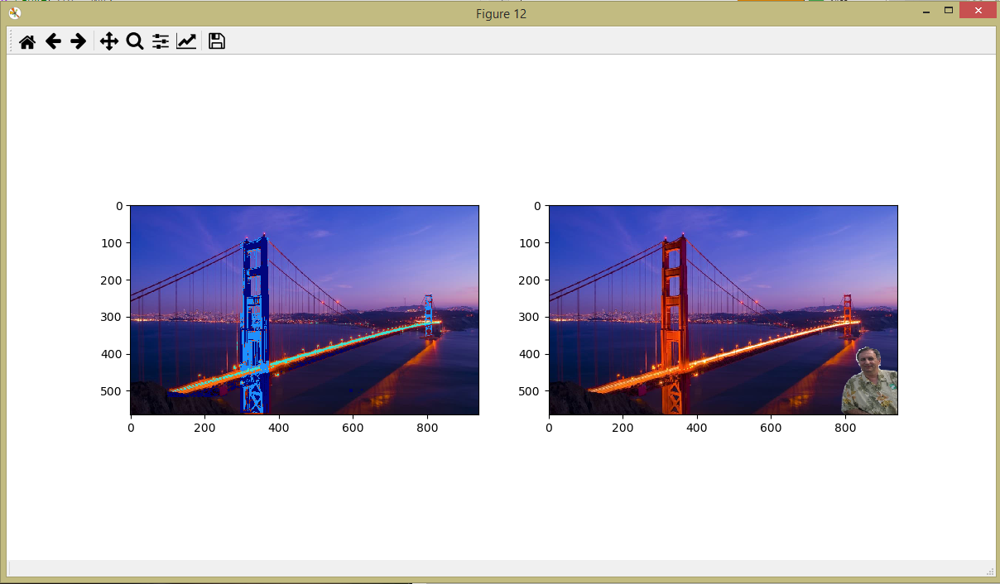
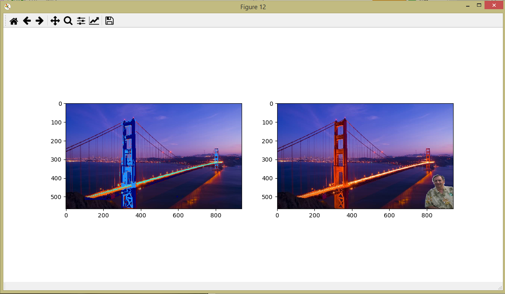

Click here to return back to the Portfolio page!
This is the first project that we created in Python. My partner, Milo Chang, and I created an interactive story depicting the love story between two different individuals that met by chance.
 

In this project, I worked with Wesley Hu and Grace Xu in order to make 8 changes to a picture of the Golden Gate Bridge. The changes include adding a blue moon, adding a black frame, changing the water color to red, changing the rock color to green, changing the bridge road color to black, adding two clouds, adding a picture of Mr. Koyfman, and changing the color of the whole bridge to blue.